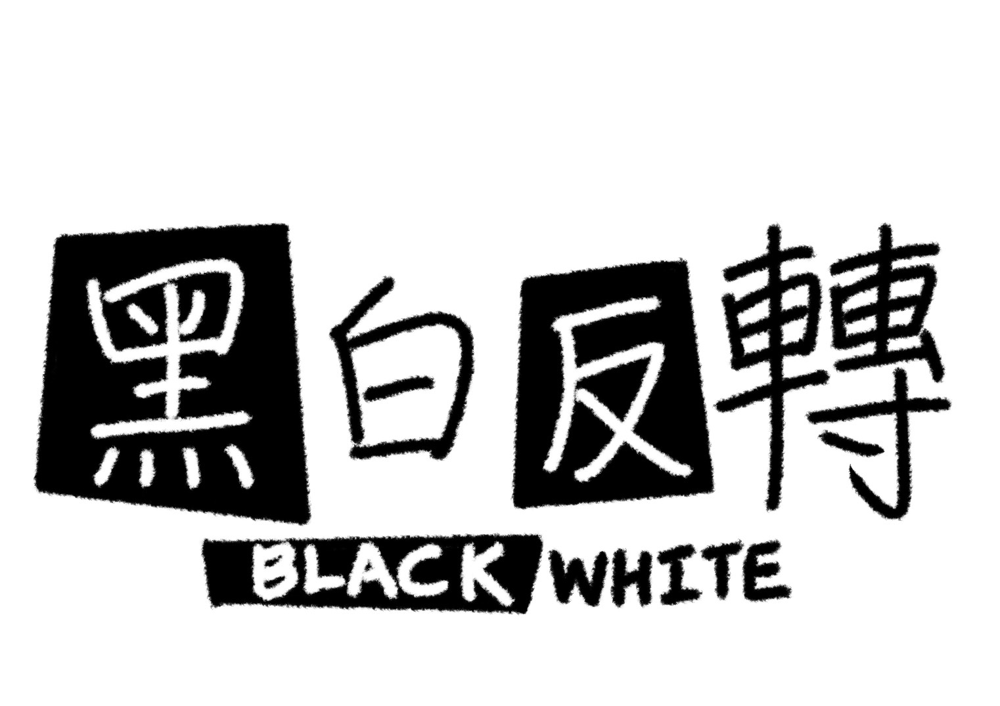
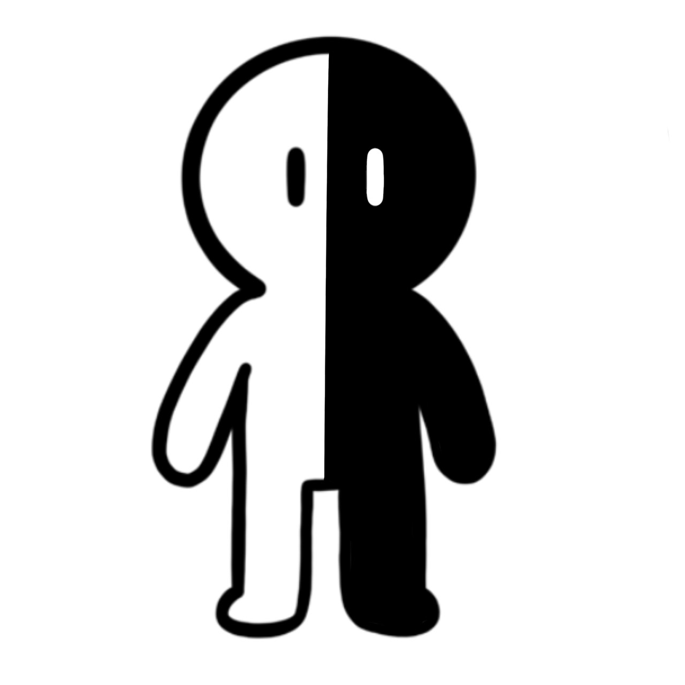
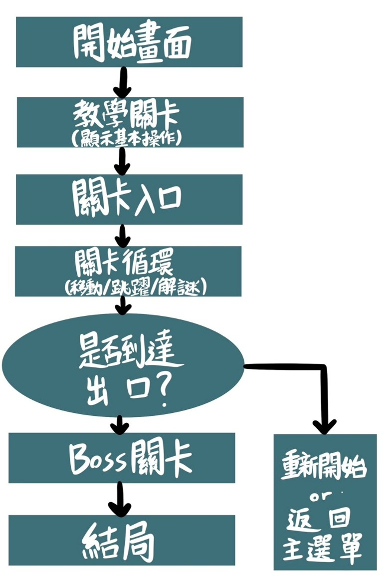
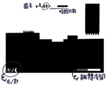
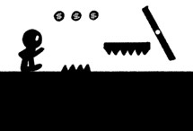
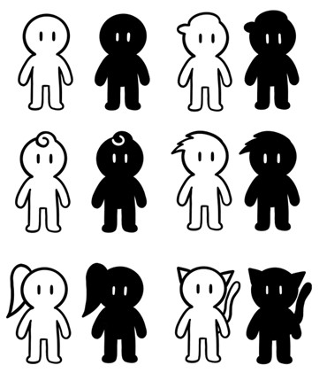
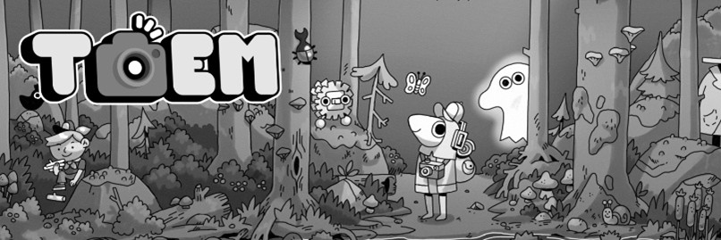
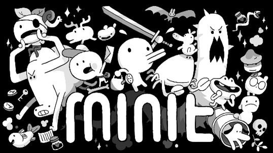
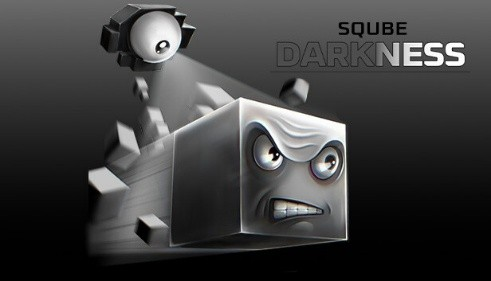

遊戲設計

| 學生:1411322033劉宣之 |
| 指導老師:陳賢錫 |
目錄
一、 製作動機
二、 遊戲目的
三、 為甚麼玩家會想要遊玩這款遊戲
一、 操作方式
二、 劇情
三、 玩法介紹
四、 流程圖
五、 SWOT分析
一、 介面設計
二、 風格圖
三、 角色設計
▲遊戲名稱
黑白反轉
設計概念:用黑白的概念設計出我的企畫書封面。

▲遊戲Logo
黑白角色
一、
製作動機
想到前陣子跟朋友玩Switch的瑪利歐系列闖關遊戲，
裡面其中一個關卡會跑到只有看的到剪影的地方，
增加難度。雖然困難，但卻是我印象最深刻的部分，
所以想以此為發想，去設計一款影子遊戲。
二、
遊戲目的
希望玩家可以從遊戲過程中，獲得短暫的平靜，透過黑白的美術設計，
帶出一種簡單輕鬆的感覺。遊玩過程要活用反轉機制，解決黑白各有的障礙，
並且挑戰腦力與反應力。往後是否發展出彩色的世界，待討論。
三、
為什麼玩家會想要遊玩這款遊戲
透過簡單可愛的遊戲美術設計吸引想要療癒身心靈的玩家。
透過快速轉換黑白角色，在滿滿的遊戲快感與緊張感之餘，
體驗腦力激盪。也在過程中加入溫和的音樂，幫助玩家放鬆心情。
光與影分離致世界崩壞，玩家操控兩者同行，
唯有同步抵達出口，方能修復裂縫。
一、
操作方式
A / D
或
← / →：左右移動
↑/W/Space：跳躍
Shift :
黑白翻轉（光與暗區域交換位置）
F：啟動機關
/
開門
R：重新開始關卡
二、
劇情
原本的世界光與影子是一體的，但隨著時間流逝，
光越來越耀眼，影子則被迫只能待在黑暗深處。
光與影分裂之後，世界開始崩壞(道路斷裂、陷阱浮現)，
沒有一方能單獨存活。玩家同時背負著白色本體與黑色影子，
兩者對立，卻缺一不可，也只有在光與影同時抵達出口時，
世界的裂縫才會癒合。
三、
玩法介紹
在這個被黑與白撕裂的世界裡，只有「反轉」才能讓你前進。
你要同時操控光與影，一體卻又對立的存在。
轉換時機、解開謎題、讓兩個靈魂再次相遇。
但要小心，光若墜落，影也將一同消失。
四、
流程圖

五、
SWOT分析
玩法獨特、操作簡單，美術極簡卻具辨識度。
關卡需高度創意，角色抽象感可能降低玩家代入感。
延伸空間大。
同類遊戲競爭激烈，玩家耐心與市場流失風險高。
一、
介面設計
•螢幕左下：顯示「光
/
影」狀態
（目前誰在優勢區域）
•
螢幕右下：提示「翻轉冷卻」進度條
（避免連續瘋狂翻轉）
•
上方：時間倒數或通關進度。

二、風格圖

三、角色設計

•黑白手繪風冒險遊戲《TOEM》

•黑白風格冒險遊戲《Minit》

•《Sqube Darkness》
